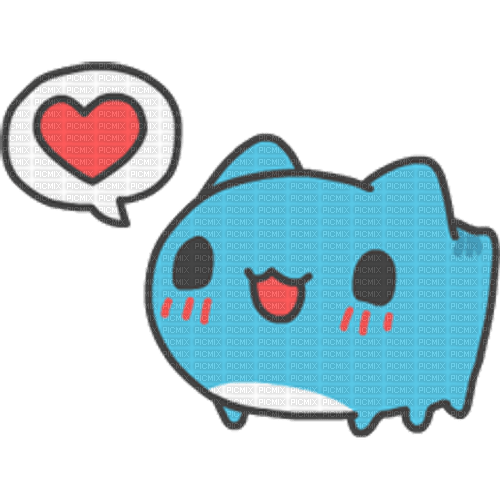

Ya son dos meses, dos meses juntos, y la verdad, cuando me pongo a pensar en todo lo que ha pasado durante este tiempo, se me hace curioso pensar que apenas llevamos dos meses. Siento que fue ayer cuando finalmente te pedí que fueras mi novia y empezó oficialmente todo esto que tenemos, pero al mismo tiempo siento que llevas mucho más tiempo formando parte de mi vida.
Antes que nada, quería decirte algo sobre la página, me da un poco de pena volver a usarla para este mes, sé que quizá no es algo completamente nuevo y sinceramente, me hubiera gustado hacerte algo diferente esta vez. Me hubiera encantado poder verte en persona, llegar con unas flores, unos chocolates, darte un abrazo enorme y simplemente pasar un rato contigo, no necesitaba hacer algo especial, solo quería poder celebrar estos dos meses contigo.
Por eso terminé usando otra vez la página, pero tampoco quería simplemente dejarla igual, me tomó bastante tiempo cambiar cosas, reestructurarla y hacer que se sintiera diferente para este mes. El primer mes decidí dejarlo tal cual estaba, porque quería conservarlo como recuerdo de cómo empezó todo, quería que esa parte se quedara exactamente como estaba, pero todo lo demás sí quise cambiarlo y hacerlo un poco más especial. Quizá no sea exactamente lo que me hubiera gustado hacer contigo, pero lo hice pensando en ti y espero que puedas sentir un poco de todo el cariño que le puse.
Aunque, realmente, no quiero que este mensaje se trate de la página ni de lo que me hubiera gustado hacer hoy. Quiero que se trate de nosotros. De estos dos meses, de todo lo que hemos vivido y, sobre todo, de lo feliz que me hace poder decir que eres mi novia.
Siento que el tiempo se ha pasado muy rápido, ya son dos meses y todavía me parece increíble que tú y yo estemos viviendo esto, a veces pienso en cómo empezó todo, en cómo terminamos llegando hasta aquí y en todas las pequeñas cosas que han pasado entre nosotros y no puedo evitar sonreír. Me hace muy feliz estar viviendo todo esto contigo, y creo que una de las cosas más bonitas es justamente que seas tú la persona con la que estoy compartiendo todo esto.
También me hizo muchísimo bien que vinieras hace una semana, no sabía cuánto necesitaba verte hasta que finalmente pude hacerlo, ese mes y medio se me hizo eterno, extrañarte durante todo ese tiempo fue difícil y cuando por fin pude tenerte otra vez cerca, sentí que toda esa espera había valido la pena. Aunque hay algo medio injusto en eso: apenas te vi la semana pasada y ya te extraño muchísimo otra vez.
Me gusta estar contigo, me gusta hablar contigo, escucharte, verte y compartir cosas contigo. Incluso las cosas más pequeñas o más tontas. No necesito que siempre estemos haciendo algo especial para sentirme feliz contigo. Muchas veces simplemente saber que estás ahí ya me hace sentir bien.
Y también quería disculparme por algo, a veces siento que no sé muy bien cómo expresarme contigo. Hay momentos en los que simplemente no sé qué decir o cómo responder cuando me dices algo bonito. A veces leo tus mensajes y tengo un montón de cosas que quisiera decirte, pero no sé cómo ponerlas en palabras y sé que algunas veces puedo parecer poco expresivo. También siento que muchas veces no sé cómo demostrarte lo mucho que agradezco tus palabras, tus detalles, tu cariño y todo lo que haces por mí.
Y sí, a veces siento que termino diciendo las mismas cosas una y otra vez, me da miedo que algún día puedas pensar que soy aburrido o que mis palabras ya no significan tanto porque las repito demasiado. Pero quiero que sepas algo. Que repita algunas cosas no significa que las sienta menos. Si te digo muchas veces que te amo, es porque realmente te amo. Si te digo que te extraño, es porque realmente te extraño. Si te digo que eres importante para mí, es porque realmente lo eres. Simplemente hay cosas que todavía no sé cómo explicar. Y aunque a veces no encuentre las palabras correctas, sí sé lo que siento por ti.
Te amo muchísimo. Y no quiero dejar de decírtelo solamente porque ya te lo he dicho muchas veces. No quiero que para mí decirte "te amo" se convierta en algo automático. Cada vez que te lo digo, lo siento de verdad.
Gracias. Gracias por llegar a mi vida y por dejarme formar parte de la tuya. Gracias por quererme, por escucharme, por tenerme paciencia y por compartir conmigo todos estos momentos. Gracias por cada conversación, cada mensaje, cada llamada, cada abrazo, cada detalle y cada momento que hemos pasado juntos. Y también gracias por todas esas pequeñas cosas que quizás no significan demasiado, pero que yo termino guardando con muchísimo cariño. Gracias por hacerme sentir querido. Gracias por hacerme sentir especial. Y gracias por elegirme para compartir conmigo una parte de tu vida.
Sé que apenas llevamos dos meses y que todavía nos queda mucho por conocer el uno del otro. Todavía hay muchas cosas que quiero vivir contigo, momentos que quiero compartir, fotos que quiero tomar, recuerdos que quiero hacer y días en los que simplemente quiero estar contigo. Quiero seguir conociéndote. Quiero conocer tus pequeñas costumbres, tus gustos, tus sueños, las cosas que te hacen feliz, las que te preocupan, las que te emocionan y todas esas partes de ti que todavía no conozco del todo. Quiero seguir descubriéndote poco a poco y también quiero que tú sigas descubriéndome a mí.
No sé qué nos espera más adelante, no sé cómo van a ser los próximos meses ni todas las cosas que vamos a vivir. Pero sí sé que estos dos meses han significado muchísimo para mí. Me han hecho muy feliz y me han dado momentos que no cambiaría por nada, ojalá estar contigo ahora mismo para decirte todo esto mirándote a los ojos, abrazarte y dormirme abrazándote, simplemente quedarme contigo un rato. Ojalá pudiera darte las flores, los chocolates y ese momento juntos que me hubiera gustado regalarte hoy, pero mientras pueda hacerte llegar estas palabras, quiero que al menos puedas saber todo lo que siento por ti.
Te amo. Te amo por quien eres, por cómo me haces sentir y por todos esos pequeños momentos que hacen que estar contigo sea tan especial para mí. Y aunque no siempre sepa expresarlo de la mejor manera, aunque a veces me quede sin palabras o termine repitiendo lo mismo una y otra vez, quiero que nunca dudes de algo: Eres alguien demasiado especial e importante para mí. Me haces muy feliz. Y estoy muy agradecido de poder decir que eres mi novia.
Felices dos meses, mi amor. Espero que esto sea solamente el comienzo de muchos momentos más juntos. Espero que todavía nos queden muchas conversaciones, muchas llamadas, muchos abrazos, muchas fotos, muchos recuerdos y muchos días juntos. Y espero poder seguir diciéndote que te amo durante muchísimo, muchísimo tiempo más, gracias por ser tú y gracias por dejarme ser parte de tu vida. Te amo muchísimo, mi vida hermosa.